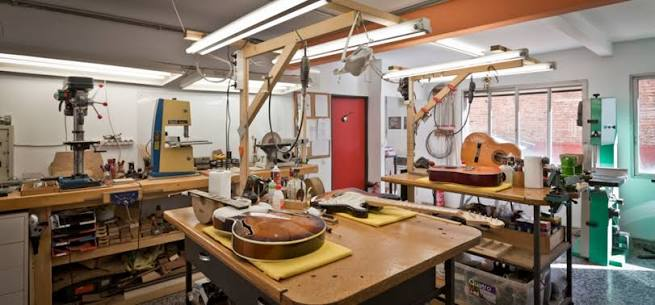

Sobre mí
Soy Fabrizio, creador de FindAGem. Este proyecto nace de mi interés por los instrumentos con historia y por las piezas que permiten conservar su sonido, su estética y su identidad.

La idea detrás del proyecto
Muchas reparaciones se detienen porque una pieza es difícil de encontrar o porque no existe información suficiente para elegirla. FindAGem busca reunir productos, referencias y asesoramiento en un mismo lugar para que cada instrumento pueda volver a tocarse y disfrutarse.